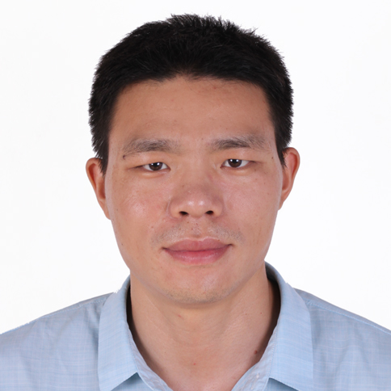
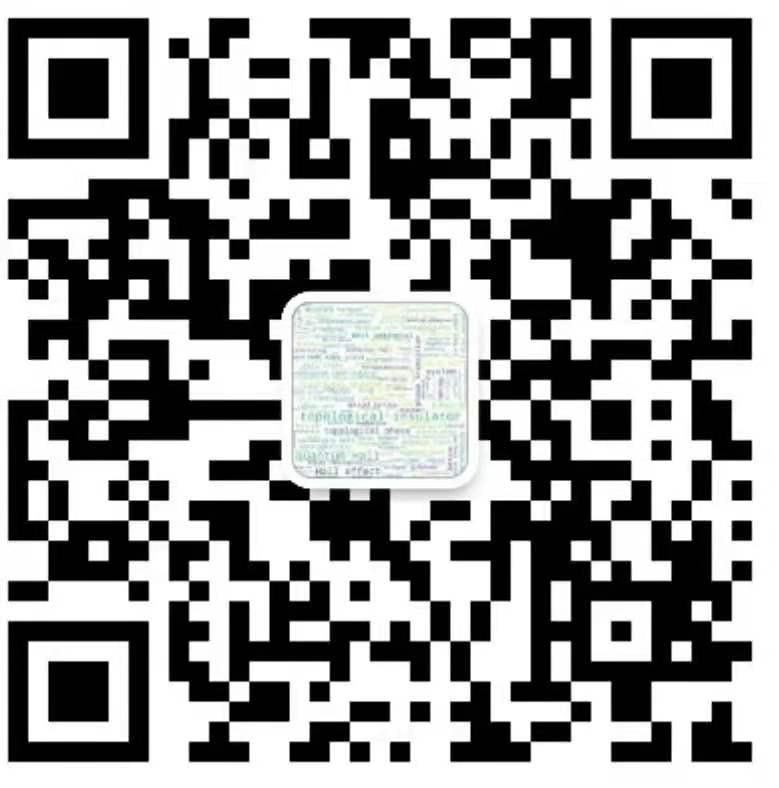

|
|||

左正伟(Zheng-Wei Zuo: English)

主要研究方向：拓扑绝缘体、拓扑半金属、拓扑超导体和强关联系统等的输运性质。近期研究兴趣：
1）分数量子霍尔效应、分数陈绝缘体、一维Mott绝缘体、一维任意子系统等强关联拓扑系统。
2）强关联系统和超导体等复合系统的输运性质：隧穿过程和干涉效应等。
3）一维Luttinger液体和非阿贝尔玻色化方法构造新型高维度强关联拓扑物态。
Email:zuozw@haust.edu.cn
zuozw@163.com
学习与工作经历
2011/09–2014/06，南京大学，物理学院，博士2014/06–至今，河南科技大学，物理工程学院
2018/10–2019/10，宾夕法尼亚州立大学，访问学者
主持项目
1、国家自然科学基金面上项目：12074101，长程相互作用和空间调制相互作用对强关联量子系统的拓扑特性影响，2021/01-2024/12，60万元，在研，主持。
2、河南省优秀青年基金项目:212300410040，低维拓扑量子物质的相变研究，
2021/01-2023/12，25万元，在研，主持。
3、国家自然科学基金青年基金项目：11604081，基于耦合量子线法和玻色化技术构造拓扑物态的研究，
2017/01-2019/12，20万元，完成，主持。
4、国家自然科学基金应急管理项目：11447008，拓扑强关联物质和超导体复合系统的输运性质，
2015/01-2017/12，20万元，完成，主持。
近期论文
(1) Zheng-Wei Zuo#, Ajit C. Balram#, Songyang Pu, Jianyun Zhao, Thierry Jolicoeur, A. Wójs, and J. K. Jain, Interplay between fractional quantum Hall liquid and crystal phases at low filling, Phys. Rev. B, 102: 075307, 2020.(#共同一作)(2) Zheng-Wei Zuo, Da-wei Kang, Liben Li, Topological end states in a one-dimensional spatially modulated interaction spinless fermion model, New J. Phys. 22: 083057, 2020.
(3) Dawei Kang, Zheng-Wei Zuo, Shuai Zhang, Zhaowu Wang, Longlong Zhang，Stacking order driving bandgap and conductance of graphene/C3B (C3N) van der Waals heterostructures，Appl. Phys. Lett. 116, 153103, 2020.
(4) Zheng-Wei Zuo, Guo-Ling Li, Liben Li, Statistically induced topological phase transitions in one-dimensional superlattice anyon-Hubbard model, Phys. Rev. B, 97: 115126, 2018.